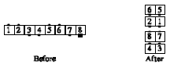

From any appropriate formation (there must be a center 4): The center 4 do the call in their group and move to the outside, while the outsides work with each other and do the call as they move into the center. The following diagrams show who works with whom on a Cross-Concentric call:
The last two formations shown are really the same; the grouping on the left is used if the caller only says "Cross-Concentric..." or the Cross-Concentric call doesn't start in diamonds. The grouping on the right is used when the caller says "Cross-Concentric Diamond..." or when the Cross-Concentric call can only be done from diamonds (e.g. Cross-Concentric Diamond Circulate).
If the Cross-Concentric call is being done from general lines or general columns, and the call starts and ends in a 2x2 box (e.g. Cross-Concentric Star Thru), the following rule applies: If the centers begin as though in columns, they finish as though the ends of columns; if they begin in lines, they finish as the ends of lines.
Cross-Concentric Star Thru:
If the Cross-Concentric call ends in a 2x2 box but starts elsewhere (e.g. Cross-Concentric Recycle from a tidal wave), the following rule applies: The new outside dancers (the original centers!) adjust so that the long axis of the ending formation is at right angles to the long axis of the starting formation.
For example: Cross-Concentric Wheel and Deal:

Cross-Concentric Wheel and Deal:
Cross-Concentric Crossfire:
Cross-Concentric Recycle:

Cross-Concentric Reverse Explode:
Cross-Concentric Single Hinge:
Cross-Concentric Step and Fold
Cross-Concentric Diamond, Flip the Diamond: